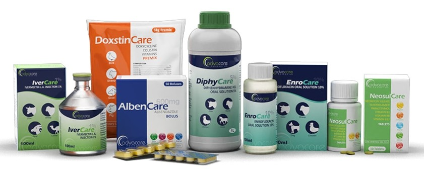
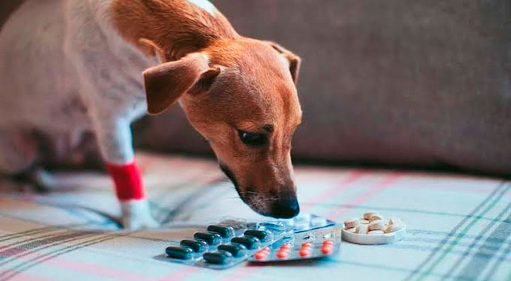
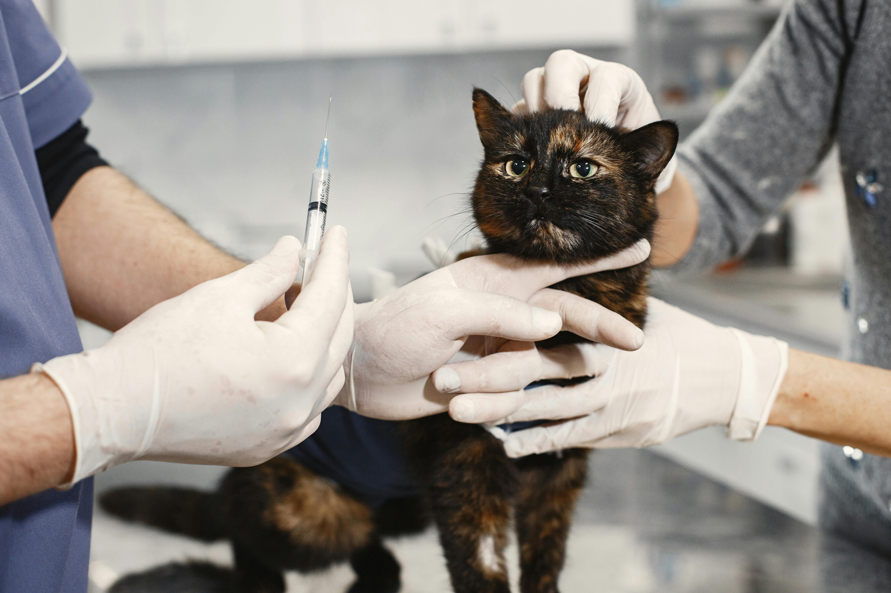

VETERINARIO Y MEDICAMENTOS

PORQUE ES IMPORTANTE EL VETERINARIO EN LOS ANIMALES?
Llevar a tu mascota al veterinario es clave
para su bienestar porque ayuda a prevenir,
detectar y tratar enfermedades antes de que se
agraven. Vacunas, desparasitación
y otros cuidados médicos son las funciones de los veterinarios
para evitar estas enfermedades.
Aquí te dejo algunas razones por las que
las visitas veterinarias son esenciales:
- Revisión general: El veterinario puede identificar problemas de salud que no son evidentes a simple vista, como infecciones internas o deficiencias nutricionales.
- Vacunación y desparasitación: Estas medidas protegen a tu mascota contra enfermedades graves y contagiosas.
- Atención especializada: Si tu mascota muestra cambios en su comportamiento, falta de apetito o síntomas preocupantes, el veterinario puede diagnosticar y ofrecer el tratamiento adecuado.
- Consejos personalizados: Un profesional puede orientarte sobre la alimentación, ejercicio y cuidados específicos según la especie y edad de tu mascota.
PORQUE USAR MEDICAMENTOS EN LOS ANIMALES?
Los medicamentos en los animales son esenciales para mantener su salud y bienestar. Se utilizan por varias razones, entre ellas:
- Tratamiento de enfermedades: Cuando una mascota se enferma, los medicamentos pueden ayudar a combatir infecciones, reducir inflamaciones y aliviar el dolor.
- Prevención de problemas de salud: Vacunas, antiparasitarios y suplementos aseguran que tu mascota esté protegida de enfermedades antes de que aparezcan.
- Recuperación de cirugías o lesiones: Algunos tratamientos facilitan la sanación después de una operación o accidente.
- Manejo de condiciones crónicas: Si tu mascota tiene problemas como alergias, artritis o diabetes, ciertos medicamentos pueden mejorar su calidad de vida.
Es importante que los medicamentos sean recetados por un veterinario y administrados correctamente, ya que un mal uso puede ser peligroso.
MEDICAMENTOS MAS COMUNES PARA LOS ANIMALES
PERROS
Algunos de los medicamentos más comunes para perros incluyen:
- Meloxicam: Un antiinflamatorio no esteroideo (AINE) utilizado para tratar el dolor y la inflamación, especialmente en problemas articulares.
- Marbofloxacino: Un antibiótico que combate infecciones bacterianas
- Ciprofloxacino: Otro antibiótico que puede ser recetado en ciertos casos.
- Propalin: Se usa para tratar la incontinencia urinaria en perros.
- Augmentine: Una combinación de amoxicilina y ácido clavulánico, utilizada para tratar infecciones bacterianas.
- Metacam: Un medicamento antiinflamatorio y analgésico ampliamente utilizado en medicina veterinaria.

GATOS
Algunos de los medicamentos mas comunes para gatos son:
- Amoxicilina: Un antibiótico ampliamente utilizado para tratar infecciones bacterianas.
- Meloxcam: Un antiinflamatorio no esteroide(AINE) que ayuda a reducir el dolor y la inflamacion.
- Cerenia: Se usa para tratar el vomito y las náuseas en gatos
- Clavamox: Una combinacion de amoxicilina y acido clavulánico, eficaz contra infecciones.
- Buprenorfina: Un analgésico potente utilizado para el manejo del dolor en gatos.
- Enrofloxacina: Un antibiótico que combate infecciones respiratorias y urinarias.

GANADO VACUNO
El cuidado de las vacas requiere
medicamentos específicos para mantener
su salud y prevenir enfermedades. Algunos
de los más comunes incluyen:
- Antibióticos: Como la penicilina y la oxitetraciclina, utilizados para tratar infecciones bacterianas.
- Antiparasitarios: Ivermectina y doramectina, empleados para eliminar parásitos internos y externos.
- Antiinflamatorio: Flunixina meglumina y meloxicam, que ayudan a reducir el dolor y la inflamacion.
- Vitaminas y suplementos: Complejo B y minerales como calcio y fósforo, esenciales para su bienestar.
- Vacunas: Contra enfermedades como la fiebre aftrosa, brucelosis y leptospirosis.

REGRESAR